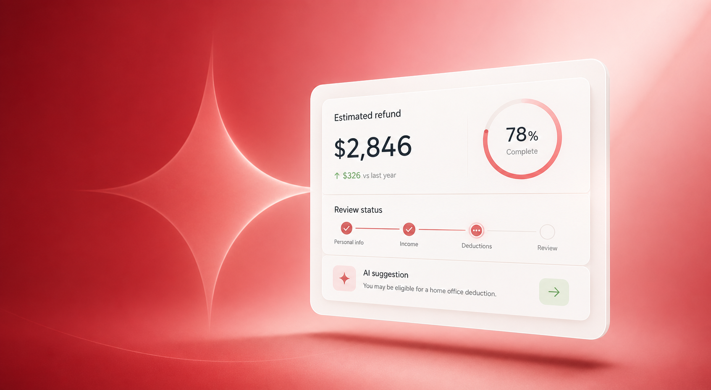

01
Remove the anxiety
Tax software should reduce uncertainty, not bury people in technical language. Every step should feel understandable and manageable.
Kuberis combines AI-assisted guidance, smart document review and a calm step-by-step experience to help Canadians file with greater confidence.

Tax software should reduce uncertainty, not bury people in technical language. Every step should feel understandable and manageable.
Kuberis uses AI to organize information, identify items worth reviewing and explain recommendations in plain language.
AI can assist, but the user remains responsible for reviewing and confirming every important decision before filing.

Upload documents, let Kuberis organize the information and review AI-assisted suggestions before completing your return.
I finally understood why each question mattered. The experience felt calm instead of intimidating.
The AI suggestions were useful because I could review the reasoning instead of blindly accepting an answer.
Guided tax preparation with contextual explanations and review prompts.
A focused workflow for individuals and families filing Canadian returns.
Organize income and expenses with workflows designed for independent professionals.
Future tools to keep documents organized and reduce last-minute tax stress.